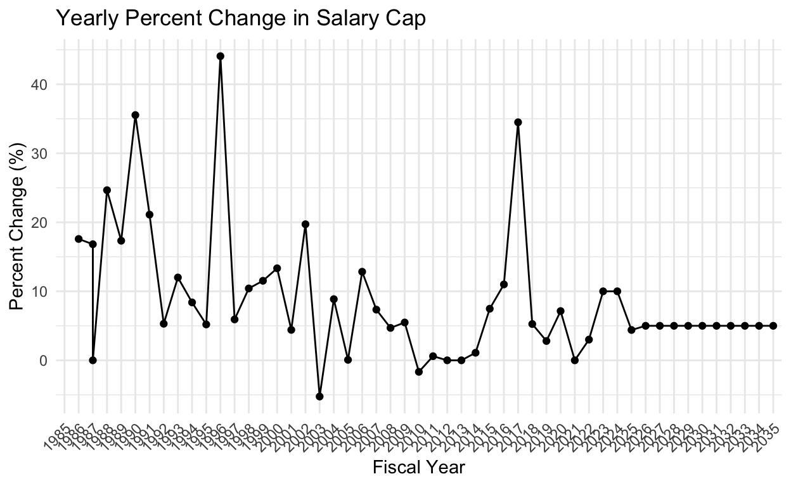

Super-Duper-Maxed
Jaylen Brown, the monodextrous (just kidding) All NBA forward for the Boston Celtics, joins the vaunted halls of Mike Connely during waning days of the grit n grind Grizz mid-late 2010s era as the possessor of the single richest NBA contract in history. He won’t have this for long, as he soon be surpassed by other superstars including another Celtic player. Nonetheless, the numbers involved have been staggering to say the least. A five year, $303.7 million dollar extension. Thats an average of $60 million dollars per year.
For the upcoming 2024 Fiscal Year NBA season, the salary cap is $136 million dollars. The new TV deals and whatever other shenanigans they’re doing (including a lot of amazing and not-so amazing work to globalize the NBA) results in the salary cap skyrocketing in the next ten years.
The below graph shows the annual percent change in the cap. Much has been written about the 2016 spike allowing some over powered dynasties to carry on their demonination a bit longer. But thats not even the highest spike in the last three decades; what the hell happaned in 1995-96? That’s for another day…

Lets look at the top 21 salaries in the NBA over the next couple years. Obligatory laughing-out-loud moment for Ben Simmons being on this list.
The chart shows that Brown will be in the bottom of the top 25 paid players as a percentage of cap in the 2024 season. But after that, and critically before any mega-blooper deals are paid to Giannis, Luka, and Embiid, he’ll be in the top 5 or 3.
Should Boston fans temporarily pause in their self flaggelation over their wittling salary cap? Maybe. Or maybe it helps to just remember that while they will be attributing ~40% of their cap to Jaylen Brown for the rest of the 2020s, whoever trades for Damian Lillard and the Phoneix Suns are doing the same with Bradley Beal. Given the age difference I’d much rather be Boston.